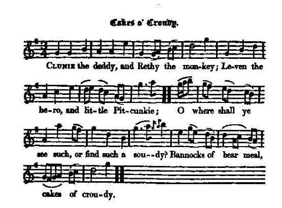
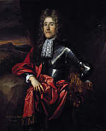
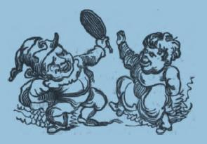

Cakes o' Croudy
Les galettes de gruau
composed by Lord Newbattle (1661-1722) in 1688
Tune - Mélodie"Cakes o' Crowdy"
from Hogg's "Jacobite Reliques" N° 11
Sequenced by Christian Souchon

|
The tune is usually known as "Bannocks of Bear Meal". "Bannock" is a Scots word for a type of oatcake, kneaded with water only and baked on a girdle, which was part of the typical fare of a wedding feast, as described in Sir Robert Semphill's late 16th century work, "The Blithesome Bride".
"Crowdie" was meal and water in a cold state mixed together, so as to form a thick gruel. John, Duke of Argyle (1678 -1743), is credited with composing the words to another Scots song "Bannocks of Barley Meal" For other information on this tune, see: "Argyle is my Name" (Johnson's Scots Musical Museum VI -560) "Bannocks of Bear Meal" (Johnson's SMM V -475). Source "The Fiddler's Companion" (cf. Links). |
La mélodie est généralement connue sous le titre "Galettes de gruau". Le mot écossais "bannock" désigne un gâteau d'orge, pétri dans de l'eau et cuit à la poêle, qu'on servait avec d'autres plats typiques aux repas de mariage tels que décrits dans l'ouvrage de la fin du 16ème siècle de Sir Robert Semphill, "La Jeune mariée joyeuse"
Le "crowdie" était fait de farine et d'eau qu'on mélangeait à froid pour constituer un gruau épais. John, Duc d'Argyle (1678 - 1743), est considéré comme l'auteur d'un autre chant écossais, "Bannocks of Barley Meal". On trouvera d'autres informations sur ce chant à propos de: "Argyle is my Name" (Johnson's Scots Musical Museum VI -560) "Bannocks of Bear Meal" (Johnson's SMM V -475). Source "The Fiddler's Companion" (cf. liens). |

|
CAKES O' CROUDY. [1] [2]
1. Chinnie [3] the deddy, and Rethy the monkey; Leven the hero, and little Pitcunkie; O where shall ye see such, or find such a soudy? [4] Bannocks of bear meal, cakes of croudy. 2. Deddy on politics dings all the nation, As well as Lord Huffie does for his discretion; And Crawford comes next, with his Archie of Levy, Wilkie, and Webster, and Cherrytrees Davy. [5] 3. There's Greenock, there's Dickson, Houston of that ilkie, For statesmen, for taxmen, for soldiers, what think ye ? Where shall ye see such, or find such a soudy ? Bannocks of bear meal, cakes of croudy. 4. There's honest Mass Thomas, and sweet Geordie Brodie, Weel kend Mr Wm Veitch, and Mass John Goudy, For preaching, for drinking, for playing at noudy— Bannocks of bear meal, cakes of croudy. 5. There's Semple for pressing the grace on young lassies, There's Hervey and Williamson, two sleeky asses, They preach well, and eat well, and play well at noudy— Bannocks of bear meal, cakes of croudy. 6. Bluff Mackay for lying, lean Lawrence for griping, Grave Bernard for stories, Dalgleish for his piping. Old Ainslie the prophet for leading a dancie, And Borland for cheating the tyrant of Francie. 7. There's Menie the daughter, and Willie the cheater, There's Geordie the drinker, and Annie the eater, Where shall ye see such, or find such a soudy ? Bannocks of bear meal, cakes of croudy. 8. Next comes our statesmen, these blessed reformers, For lying, for drinking, for swearing enormous, Argyle and brave Morton, and Willie my Lordie— Bannocks of bear meal, cakes of croudy. 9. My curse on the grain of this hale reformation, The reproach of mankind, and disgrace of our nation; De'il hash them, de'il smash them, and make them a soudy, Knead them like bannocks, and steer them like croudy. Source: Jacobite Minstrelsy, published in Glasgow by R. Griffin & Cie and Robert Malcolm, printer in 1828. |
LES GÂTEAUX DE PORRIDGE [1] [2]
1. Il y a papa Chinnie [3] et son singe Rethy, Le héros Léven et le petit Pitcunkie; Energumènes qui tiennent tous du prodige? [4] Galettes de sésame et gâteaux de porridge! 2. Le vieux politicien souille notre nation, Tout comme Lord Huffie le fait, à discrétion. Viennent ensuite Crawford et Archie de Levy Davy-aux-Cerisiers et Webster et Wilkie. [5] 3. Greenock, Dickson, Houston sont du même acabit. Ils occupent l'état, le fisc, l'armée, mais oui! Où donc trouver encor de semblables lourdauds? Gâteaux de porridge et galettes de gruau! 4. L'honnête Abbé Thomas, le doux Geordie Brodie, Le fameux Weemes Veitch et Maître John Goudy Habiles à prêcher, boire et jouer pour rien- Galettes de porridge et pain de sarrasin. 5. Il y a Semple empressé de bien servir les dames, Hervey et Williamson, la belle paire d'ânes Parlant bien, mangeant bien et jouant bien pour rien. Galette de porridge et pain de sarrasin? 6. Et Macky le menteur, Lawrence le vaurien, Bernard le beau parleur, Dalgleish le musicien, Le vieux prophète Ainslie qui mènera la danse Et Borland qui saura berner le roi de France. 7. Il y a Mennie la fille et Guillot l'imposteur. Il y a Georges l'ivrogne, Annie son âme-soeur, Où pourrions-nous trouver semblable compagnie? Gâteaux de sarrasin, croustillant pain de mie. 8. Puis nos hommes d'état, dignes réformateurs, Grands menteurs, grands buveurs, gigantesques jureurs, Argyle, brave Morton, et Willie mon seigneur - Gateaux de porridge et bonne galette au beurre. 9. Je maudis cette engeance issue de la Réforme Honte de la nation, honte de tous les hommes. Le diable les emporte, en fasse une charpie. Les pétrisse en galette et réduise en bouillie. (Trad. Christian Souchon(c)2009) |
|
[1] This kind of satirical poetry is called
Pasquil
in Scotland. These satires stand out by a coarseness of expression and bitterness of feeling that are of interest for the historian as preserving the state of popular feeling in the reigns of Charles I and his descendants and being illustrative of the habits and morals of of the people of Scotland for upwards of a century.
A famous collection of Pasquil MS's is James Maidment's "Book of Scottish Pasquils 1568 - 1715", published in 1828. Some other songs in the present collection are genuine pasquils: A Cameronian Cat The Whigs Welcome from Bothwell Brigg Etc. [2] The present song was written in 1688 by Robert Lord of Newbattle (1636 - 1703), eldest son and successor of William the third earl of Lothian. In spite of this violent diatribe against the supporters of the "Glorious revolution", he agreed to be Lord Justice General and Lord High Commissioner to the Church of Scotland and in 1701 was rewarded by King William with the Marquisate of Lothian. [3] The following pseudonyms are some of the [32] heroes [of the "Glorious Revolution" of 1688] mentioned in the song:  — Chinnie ( misspelt as "Clunie" in Hogg's music score): the fourth Lord George Melville (1636 - 1707), thus called from the length of his features.He was a staunch Protestant, who supported an unsuccessful rebellion by James, Duke of Monmouth, the illegitimate son of King Charles II. He had to flee abroad but returned with Queen Mary and William of Orange (here "Meny" and ""Willie") and became Secretary of State for Scotland and the first Earl of Melville. Despite trying to exercise a moderating influence on the conflict between the Presbyterian and Episcopal factions, there was nevertheless a witch-hunt of episcopalian ministers by the Church of Scotland. He married the granddaughter of the Covenanting general, Sandy Lesley and through his wife inherited the title of the earldom of Leven and the Castle of Balgonie in Fife. (source: rampantscotland.com) — Rethy: Lord Raith, is his eldest son Alexander, (1655 -1698) — Little Pitcunkie: Lord Melville his third son — Leven the hero: his second son who whipped Lady Mortonhall with his whip. He is the Lord Huffie in Dr. Archibald Pitcairne's (1652 - 1713) comedy, "The Assembly, or Scotch Reformation" published in 1766, where he is introduced beating fiddlers and horse-hirers. — Cherrytrees Davie: see note [5]. - Greenock, Dickson, Houston: customs officers whose true names were Sir J.Hall, sir J.Dickson and M. R.Young. — Borland: this is Captain Drummond, a great turn-coat rogue, who kept the stores in the castle. — Grave Burnet or Old Gribo: presumably Bishop Burnet. — Mennie, Willie, and Annie: Prince and Princess of Orange, and Princess Anne of Denmark. — Argyle: he was killed (received his death's wound, at least) in a brothel near Newcastle. - Geordie : George, the Prince of Denmark, who is said to have been fond of his glass, and to have communicated this partially to his wife, who was sometimes called by her enemies 'Brandy Nan'. - Semple : presumedly Gabriel Semple, minister of Jedburgh. [4] The obscure word "Soudie" should mean a gross heavy person, or one who is big and clumsy. However, Hecht translates "sickan a soudie" as "such a stir". |
[1] En Ecosse, on appelait
Pasquil
ce genre de poésie satirique. Ces satires se caractérisaient par la verdeur des expressions et l'aigreur des sentiments. Elles sont utiles à l'historien en tant que reflet de l'état d'esprit général sous les règnes de Charles I. et ses descendants, et parce qu'elles permettent de suivre l'évolution des us et coutumes du peuple écossais sur plus d'un siècle.
Le plus fameux recueil de pasquils manuscrits est le "Livre des Pasquils d'Ecosse 1568 - 1715" compilé par James Maidment en 1828. D'autres chants de la présente collection sont d'authentiques pasquils: Le Chat caméronien Bienvenue aux Whighs à leur retour de Bothwell Brigg Etc. [2] Le présent chant fut écrit en 1688 par Robert Lord Newbattle (1636 - 1703), fils ainé et successeur de William, troisième comte de Lothian. En dépit de cette violente diatribe contre les partisans de la "Glorieuse révolution", il accepta de devenir "Lord Justice General" et Lord Haut Commissaire de l'Eglise d'Ecosse et en 1701 il fut récompensé par le roi Guillaume par l'attribution du titre de Marquis de Lothian. [3] Certains [des 32] pseudonymes [d'acteurs whigs de la "Glorieuse révolution" de 1688] se rapportent à des personnages connus:  - Chinnie ( orthographié à tort "Cluny" dans la partition de Hogg): le 4ème Lord Melville (1636 - 1707)qui avait un menton (chin) très allongé. C'était un Protestant convaincu, qui soutint la révolte avortée de James, Duc de Montmouth, fils illégitime du roi Charles II. Il fut contraint de s'enfuir à l'étranger, mais revint avec Guillaume d'Orange et la reine Marie (nommés ici "Willie" et "Mennie") qui le nommèrent Secrétaire d'état aux affaires écossaises et premier Comte de Melville. Malgré ses efforts pour apaiser le conflit entre les factions presbytérienne et épiscopalienne, on assista à une chasse aux sorcières visant les pasteurs épiscopaliens au sein de l'Eglise d'Ecosse. Il épousa la petite fille du Covenantaire général Sandy Lesley qui lui apporta le titre de Comte de Leven et le château de Balgonie dans le Fife. (Source: rampantscotland.com). - Rethy: Lord Raith est son fils aîné, Alexandre. - Le petit Pitcunkie: son troisième fils. - Leven le héros: son fils cadet, connu pour avoir frappé de son fouet Lady Mortonhall. C'est lui le "Lord Huffie" dans la comédie "l'Assemblée ou la Réforme en Ecosse" du Dr Pitcairne (1652 - 1713) où on le montre en train de battre des violoneux et des loueurs de chevaux. - Davie l'Homme aux cerisiers: cf note [5] - Greenock, Dickson, Houston: officiers des douanes dont les vrais noms étaient Sir J.Hall, sir J.Dickson et M. R.Young. - Borland : il s'agit du Capitaine Drummond, un vil transfuge chargé de l'intendance au château royal. - Grave Burnet ou le vieux Gribo: l'évêque protestant Burnet - Mennie (=Marie) et Guillot: le Prince d'Orange et son épouse, Annie, la Princesse de Danemark. - Argyle: qui reçut une balle mortelle dans un lupanar près de Newcastle. - Geordie: Georges, le prince de Danemark, très porté, paraît-il, sur la boisson et qui aurait déteint sur son épouse appelée parfois par ses ennemis, "Brandy Nan" (=Anne). - Semple: peut-être Gabriel Semple, pasteur à Jedburgh. [4] Le mot (obscur) "Soudie" (traduit par "énergumène"), désignerait une personne fruste et lourde, ou encore grande et maladroite. Pour Hecht le mot veut dire "tohu-bohu |
|
[5]
Cherrytree Davy
is the Mass David Williamson, meant in the following short epigramm collected by David Herd (1732 - 1810) and published by Hans Hecht in 1904 under N°92:
"Mass David Williamson, chosen of twenty, Gaed up to the pulpit, and sang 'Killicrankie', Saw ye e'er, heard ye e'er, sickan a soudie? Bannock o' bear-meal, Cakes o' croudie!" . Hogg notes: "Rev. Mr. D. Williamson, famous in having been put to bed with Murrey's (of Cherrytrees) daughter by her mother, for the purpose of concealing him when pursued by the troopers. The young lady afterwards proved with child. Herd's MS collection has a song, Dainty Davie , about this curious event (N°35 in Hecht's edition, evidently to be sung to the tune used, in this collection to accompany the song Attainted Scottish Nobles ): O leeze me on your curly pow, [blessings, head] Daintie Davie, dainty Davie, O leeze me on your curly pow, My ain dainty Davie, 1. It was in and through the window broads, [boards] And all the tirtliewirlies o'd: [intricacies] The sweetest kiss that e'er I got Was from my daintie Davie. O leeze... 2. It was down amang my daddy's pease, And underneath the "cherry trees": O there he kist me as he pleased For he was mine ain dear Davie. O leeze... 3. When he was chased by a dragon, Into my bed he was laid down I thought him wordy o' his room, And he's my dainty Davie. O leeze... Most of the notes above are quoted from Hogg's "Jacobite Relics" (1819-1821) and from Maidment's "Book of Scottish Pasquils" (1828). A longer (and more explicit) version of the same song, entitled "Denty Davie", may be found in "the Merry Muses of Caledonia ", discovered among his notebooks, after Burns's death in 1796. All you want to know about bannocks is here: terreceltiche.altervista.org/bannocks-of-barley |
[5]
Davie aux Cerisiers
est le Rév. D. Williamson de l'épigramme tiré de la collection de manuscrits de David Herd (1732 - 1810), publiée par Hans Hecht sous le n°92 en 1904:
"Le Pasteur Williamson: On chercherait en vain Un tel énergumène!- Il est seul parmi vingt -, Il est monté en chaire chanter Killiecrankie. Des gâteaux de gruau, écuelles de bouillie!" Hogg note: "Le Pasteur Williamson, est connu pour avoir dormi dans le même lit que la fille de Lady Murrey de Cherrytrees (="cerisiers") à l'initiative de sa mère, pour qu'il puisse échapper aux dragons qui le poursuivaient. La jeune dame se retrouva enceinte. Les manuscrits de Herd renferment un chant Gentil David qui raconte ce curieux épisode (N° 35 dans le recueil de Hecht, qui se chante de toute évidence sur l'air utilisé dans ce recueil pour accompagner Les Ecossais déchus de leurs droits ): O bénie soit ta tête bouclée, Gentil David, gentil David, O bénie soit ta tête bouclée, O mon gentil petit David. 1. Il ouvrit les volets, entra Alors que régnait la panique Le plus doux baiser qu'on me donna Fut celui de mon gentil David. O bénie soit... 2. J'étais dans le potager Et sous le "Cerisier" assise. Tout son saoul m'a embrassée De David j'étais tant éprise! O bénie soit... 3. Les dragons le poursuivaient. On l'a fait partager ma couche. Le pauvre il le méritait O David, donne-moi ta bouche. O bénie soit... Notes tirées des "Reliques Jacobites" (1819-1821) de Hogg et du "Livre des Pasquils d'Ecosse" de Maidment (1828). Une version plus longue (et plus salace) de la même chanson, intitulée "Denty Davie", figure dans le recueil "the Merry Muses of Caledonia ", découvert dans les papiers de Burns après sa mort en 1796. Pour tout savoir sur les bannocks cliquer ici: terreceltiche.altervista.org/bannocks-of-barley |